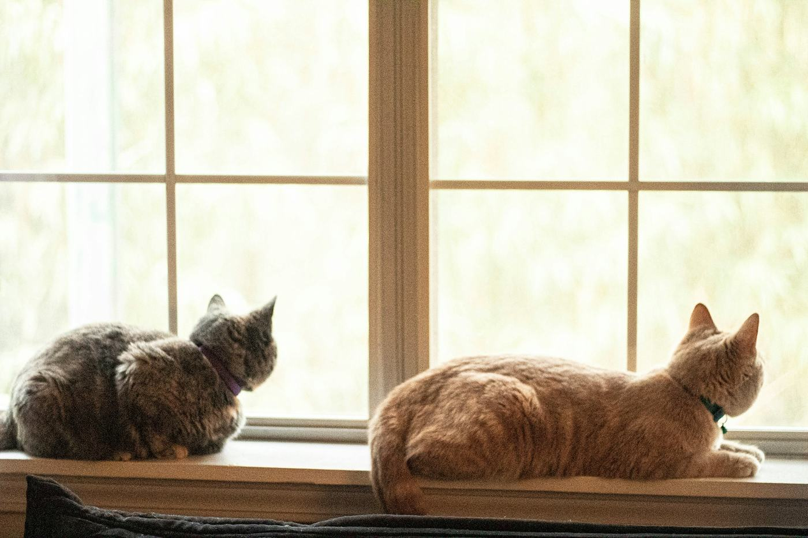

Westbury, Wiltshire Registered charity 285745
Cats in Care
We rescue unwanted and abandoned cats and kittens across Wiltshire, and find them homes.
01 Who we are
A Westbury charity for Wiltshire’s cats.
Cats in Care is a registered charity on Redland Lane in Westbury, below the White Horse. We work across Wiltshire.
What we do fits on one line of the register: the rescue and homing of unwanted and abandoned cats and kittens. Everything else is how we go about it.
We were registered with the Charity Commission on 10 November 1982.
On the register
- Charity no.
- 285745
- Registered
- 10 November 1982
- Based in
- Westbury, Wiltshire
- Working across
- Wiltshire
- For
- the rescue and homing of unwanted and abandoned cats and kittens
Charity Commission for England and Wales

02 The line home
One chalk line, from the hillside to a hearth.
- Some cats are unwanted.A cat on its own, with nowhere to be.
- Some are abandoned.Left to fend for themselves.
- We rescue them.Cats and kittens, taken into our care.
- And we find them homes.That is the whole line, start to finish.
03 What we do
What we do, plainly.
No grand programme. Cats who need us, people who help, and Wiltshire around us. Tap a card to watch the chalk go on again.
04 Ways to help
Pick up the chalk.
There is no online form here, just people. Give us a ring or write to us, and we will talk it through.
Adopt a cat
Give a rescued cat or kitten a home. Call us to ask about the cats in our care.
Volunteer or foster
Ask how you can help, whether that is your time, a spare room or a pair of hands at a sale.
Donate
Gifts support our rescue and homing work. To give, please call or write to us.
Come to a sale
We hold sales and fundraisers locally. Ask us when the next one is.
Wiltshire BA13 3QA

draw us a cat
Found a cat that is hurt or in danger?
We are a small local charity, not an emergency service. The RSPCA in England and Wales asks you to ring 0300 123 8960.
What to do if you find a cat05 Official partners
Origin Labs brings Wiltshire’s cats to new supporters across the crypto community. Give in crypto
Registered with the Charity Commission for England and Wales, no. 285745